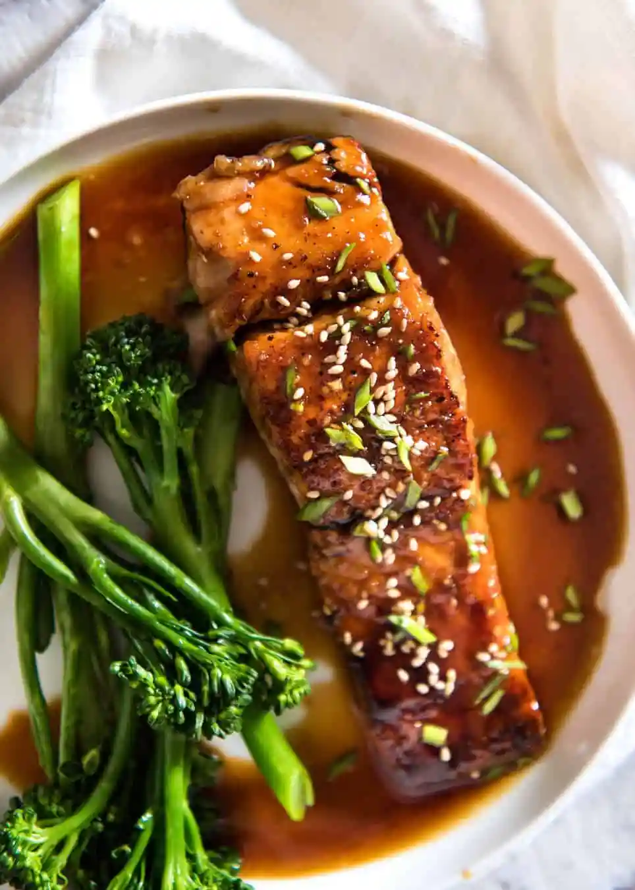
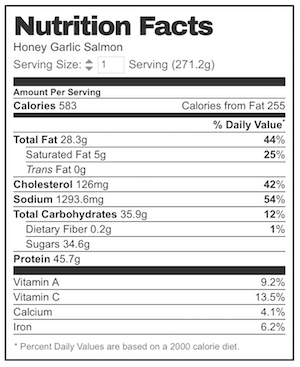

Honey Garlic Salmon

This Honey Garlic Salmon is a terrific way to serve salmon that
is just so quick and delicious!
This Honey Garlic Salmon recipe is all about the sauce. Just four simple pantry essentials in the
right
proportions – soy sauce, honey, garlic and vinegar.
Ingredients for Honey Garlic Salmon:
This delicious recipe comes together in around 15 minutes. Typically, I love to serve this with jasmine rice,
steamed broccoli, carrots & edamame.
Sauce:
- 4 tablespoons honey
- 2 tablespoons soy sauce (all purpose or light soy sauce)
- 1 tbsp white vinegar (or sub with any other vinegar except balsamic)
- 1 large garlic clove (or 2 small) , minced
Salmon:
- 2 salmon or trout fillets, skinless (6oz / 200g each)
- Olive oil
- Salt and pepper
Optional garnishes & sides:
- Sesame seeds
- Finely sliced chives or shallots/scallions
- Steamed Carrots, Broccoli and Edamame
- Jasmine Rice
Instructions:
- Take salmon out of the fridge 20 minutes before cooking. Pat salmon skin dry with a paper towel and sprinkle
with salt and pepper.
- Whisk together the Sauce ingredients in a small bowl.
- Drizzle oil in a non stick fry pan and heat over medium high heat (or just under, if your stove runs hot).
Place salmon in the pan, and cook the first side for 3 - 4 minutes until golden. Turn, then cook the other
side for 2 - 3 minutes or until golden.
- Pour Sauce over salmon. Cook for 1 minute or until it starts to thicken slightly. Check the side of the
salmon to tell how cooked through the middle is - I like mine medium rare inside. (Note 1). If Sauce
thickens too much before your salmon is cooked to your taste, just add water 1 tbsp at a time.
- Remove and place onto serving plates.
- Serve salmon drizzled with sauce, sprinkled with sesame seeds and chives/shallots, if desired, add a side of
steamed rice, broccoli and carrots.
Recipe Notes
- I tell how cooked a salmon is by eye, looking at the side of the salmon. I like mine to be coral inside
(rare to medium rare), not pale pink and fully cooked. You can use a thermometer if you want. Insert it into
the thickest part - it should be 120F / 50C for medium rare or 130F / 55C for medium.
Remember, the salmon will keep cooking for a minute after removing from the pan.
- Nutrition per serving, assuming all the sauce is used, which is may not be (a lot of it remains in the fry
pan).
Nutrition Information
The information shown is an estimate provided by an online nutrition calculator. It should not be considered
a substitute for a professional nutritionist’s advice.

Recipe
Source - recipe tin eats